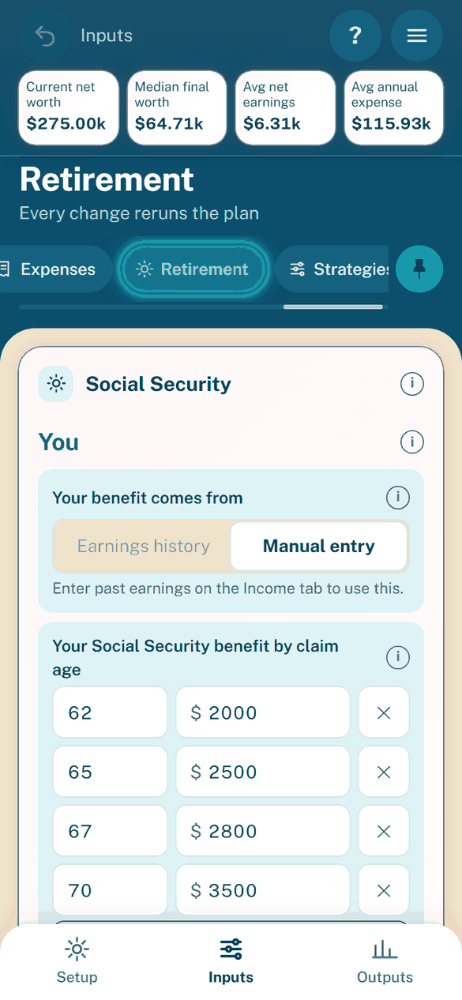
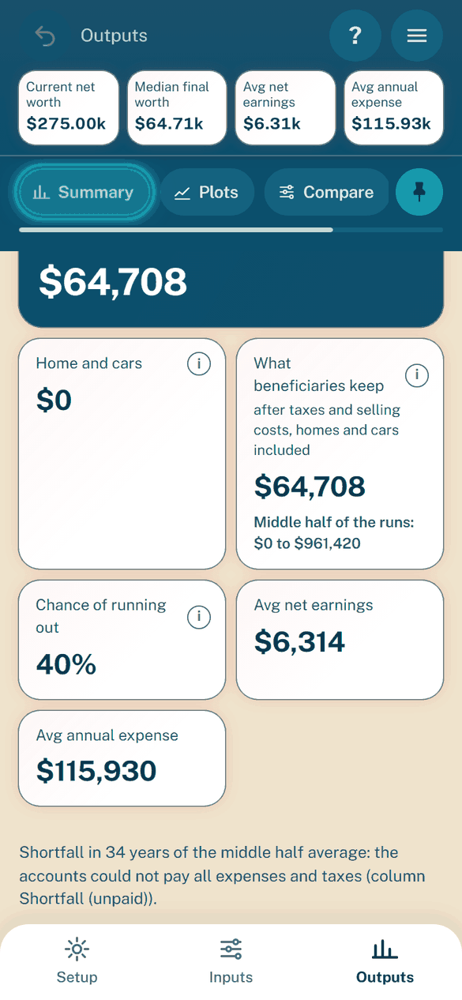
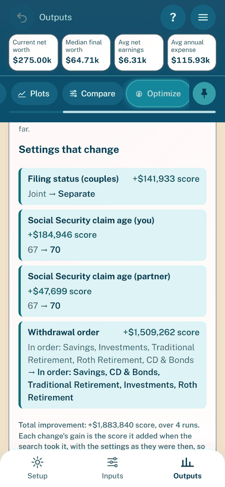
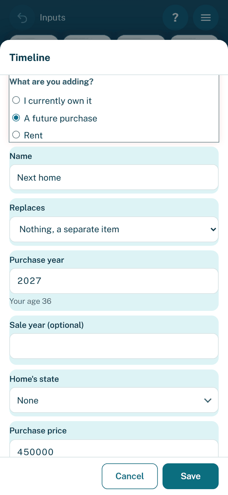
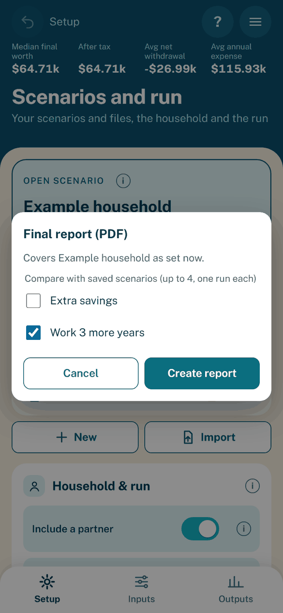

The app
In short: the app is the whole planner in one web page. It runs the same Python model inside the browser, keeps your scenarios on the phone and sends nothing anywhere. Three tabs at the bottom hold everything: Setup (your scenarios and the household), Inputs (the settings, one chip per group) and Outputs (Summary, Plots, Compare and Optimize). The ? button at the top right gives a short tour of the controls, and Undo at the top left takes back the last edits. This page is for anyone using the app: the pictures, then what every screen does and the final report. The rules behind each settings group are in Model rules by group; how the app is built and shared is in developing.
The app, Walk Me Through It (WMTI), runs the real wmti model in the
browser with Pyodide, so its numbers are those of a native Python run. It is
published as an installable web app on GitHub Pages and as a private claude.ai
artifact (see sharing the app). It has the app frame, every settings
group, the headline figures, the Monte Carlo behind every output (its tables,
deductions, charts and RMD schedule), Compare, Optimize, the final report and
saved scenarios on the device.
The app at a glance
The pictures below are the built page at 390 x 844 pixels on the example
household, taken with Playwright (see docs/images/README.txt).

Setup: the open scenario, other scenarios and the household.


Inputs: one chip per settings group; swipe sideways to move between them.


Outputs, Summary: the headline figures from the Monte Carlo runs.


Optimize: one card per change that improves the score (now → recommended and its gain), the total, and the settings kept folded into one line.


The timeline’s one Add screen (it ends in Save and Cancel, below the fields).


Final report (PDF): tick up to four saved scenarios to compare.
What the page does
The first load downloads about 20 MB (the calculation libraries and the model) and shows each start-up step with its time; on a phone it takes about 20 seconds, later loads are faster. A bottom tab bar holds three tabs, Setup, Inputs and Outputs; chips and a switch inside pick a view. The look, the menu and the color schemes are under “Look and color scheme” below.
On a window 1100 px wide or wider (a PC monitor) the page switches to a wide
layout by itself, live as the window is resized: the top bar becomes one banner
across the top with the pinned headline figures, Undo, ? and the menu, and
Setup, Inputs and Outputs show side by side below it (one fifth, two fifths and
two fifths of the width), each down to the bottom of the window and scrolling
on its own under its chips rows. There is no bottom bar, pin button or sideways
swipe between panels, and the tour skips its bottom-bar and pin steps. A
narrower window is the phone layout (wireWide in frontend/src/app.js).
Tab |
What it shows |
|
|---|---|---|
Setup |
The open scenario card at the top: its name in large type (the only place Setup shows it), whether it
is saved, the Auto-save switch and one strip of Save, Rename, Duplicate, Clear and Export (the settings as a
scenario file); then Other scenarios (the scenarios saved on this
device, each with a “…” menu) and the New and Import buttons (see Scenarios on Setup below). Then
Household & run:
the “Include a partner” switch, Your age
and Partner age (the current ages; Partner age only with a partner),
filing status, home state, the partner’s share of joint accounts and the years
to simulate. Below it the Run card: the Seed (of the single run behind the headline figures
and of the Monte Carlo, whose first run is that single run), the Runs
(25, 50 or 100, default 25; the one run count for the Monte Carlo and
Compare; its help gives the time on this device); then the Inflation card with the inflation adjusted switch
(amounts in today’s value when off) and the Inflation range under it; load the example household
(fictional figures);
and Clear all data on this device (a second tap deletes every |
|
Inputs |
Income, Children, Home, Cars, Loans, Accounts, Benefits, Healthcare, Expenses,
Retirement and Strategies (Household & run with the current ages, the Seed, the Runs, the
inflation adjusted switch, the only inflation setting, and the Inflation range are on Setup). Labels, help, units and bounds come from the
Python settings schema; Home, Loans and Expenses have notes
behind the “i” beside the group heading (only Mortgage loans feed the
deduction, a Mortgage loan plus a Mortgage Bills row charges the payment
twice, Charity rows are gifts per year, any other row can be given a
tax deduction).
The Expenses note says only expenses no other tab enters go there and
lists, one line each, where the others are entered: children, college,
daycare and the dependent care FSA on Children and Benefits; home bills
and loans on Home and Loans; car costs and car loans on Cars; healthcare on Healthcare, Medicare on Retirement;
taxes, Social Security and savings deposits are worked out. A
tax-deductible cost other than Charity, or a cost only in the child
years, needs no row. A loan’s payment row may stay if
Payment in Expenses is ticked on the loan. The
expenses are two lists of the one saved list: “Monthly expenses” (Bills,
Planned Spending, Other Spending) and “Major expenses” (Major Spending and
Charity, amounts per year); each list’s sheet offers only its categories and
a row added there starts in its first one. A new scenario and the example
household start the monthly list with the suggested categories of
|
|
Outputs |
A Summary | Plots | Compare | Optimize switch, with the Monte Carlo run bar (Run
for a manual rerun, the time estimate, progress, Cancel and a note when
the last result is stale) above Summary and Plots; see Monte Carlo below. Every Summary
table and plot is drawn from the last Monte Carlo: tables are the middle
half average per year (the runs between the 25th and 75th percentile
of final worth). Summary has three chips: Summary (tiles for the
median final worth (accounts only), Home and cars (homes and cars less
loans at the end), the final net worth after terminal tax, incl. home
and cars (what beneficiaries keep: homes, cars and loans counted, homes still owned sold on the last day, beneficiaries’ income tax on their payout of Traditional money (over 10 years or all at once), federal and state estate taxes and inheritance tax; the median of the runs with their middle half, 25th to 75th
percentile, under it; each tile’s “i” says why the after-tax figure can
be above the accounts-only one)
and the chance of running out, then the single-run
headline figures with their change from the loaded scenario; the Insights
card (see Insights); the final worth by percentile table; the
middle half average summary table),
Accounts (the middle half average accounts table) and Taxes (owner
ruling: a Taxes paid by year card with the Taxes plot’s figures, each
kind (State without the local tax, then Local Tax on its own), their
Total, the sales tax for records not added to Total, then the home
state’s deduction, exemptions and credits used for reference, from the
|
|
Every edit reruns the model after a 0.4 s pause; the status pill says
“Updating” meanwhile and is hidden once the run is done (no “Up to date” or
“Ready”). When the settings are not valid, the pill says “Check
settings”, the loader’s own message appears above the settings and the results,
and the figures from the last valid settings stay on screen, dimmed. The
current settings are saved in the browser (localStorage) as you edit and
come back on the next visit; nothing leaves the device. A saved draft the page
cannot read (not JSON, not a settings object, an older version that cannot be
upgraded, or missing parts of the settings) is discarded and the page opens on
the example household with “Saved settings could not be read; defaults
loaded.”; a draft with a value that fails a check is kept and its message shown.
A draft or a scenario saved on this device from an older version is upgraded
and saved again at once in the current format. An imported file from an older
version opens with “Upgraded to the current format; export to save the new
file.”
Scenarios on Setup
The settings you edit are the open scenario. Its card at the top of Setup
(accent-edged) shows “Open scenario”, the name in large type and a status line:
“Unsaved changes” with a dot while the settings differ from the copy saved on
this device (or none is saved yet), “Saved” or “Saved just now” once they match,
and “Saved automatically” while the small Auto-save switch beside it is on.
Auto-save is off by default and kept in this browser (autoSave in
wmti.prefs.v1); when it is on, every settled edit (a 0.4 s pause) writes the
open scenario’s saved copy, creating it under its name if there is none, and the
Save button is hidden. Under the status line one flat strip of equal-width
icon buttons holds Save (keep the settings on this device under the open
scenario’s name; at most 50 scenarios), Rename, Duplicate, Clear
and Export; on a phone narrower than 380 px the labels shrink so the five
buttons still fit one row at 320 px. Duplicate saves a copy of the open
scenario’s current settings, unsaved edits included, as “name*_Copy1” (the lowest
number not taken: “*name*_Copy2” and so on; a name that already ends in “_Copy” and a
number is counted from the part before it, so duplicating “Plan_Copy1” gives “Plan_Copy2”
when “Plan_Copy1” is taken; other endings stay, so “Q4_2025” gives “Q4_2025_Copy1”) and says so under the strip, then opens the copy as a
tap on it would: unsaved changes of the scenario left are asked about first
(Save, Discard or Cancel; its own saved copy is untouched), and Undo starts
afresh on the copy. The copy is listed in Other scenarios and offered in
Compare, so it can serve as a baseline there.
Clear empties every setting of the open scenario, as for New, after two
questions (“Clear *name?”, then “Last check: all values will be removed. Clear
it?”); Undo brings the settings back. The draft of the current settings is still
kept as you edit, whatever Auto-save says. Export (on the card, or in a row’s
“…” menu) saves name.json: through the host’s downloads where the page runs
as a claude.ai artifact, else as an ordinary browser download (the installed app
and the GitHub Pages site); only where no download can start does the file’s
text open in a dialog with Copy text. A message under the card, scrolled into
view, always says what happened (“Saved”, “Downloaded”, “Export cancelled”).
Other scenarios lists the scenarios saved on this device except the open
one, and the example household (“Example household”, the shipped figures) while
it is not open. A tap opens one; when the open scenario has unsaved changes and
Auto-save is off, a dialog asks first: Save, Discard or Cancel. Every row has a
red bin button (“Delete name”) beside its “…” menu; the menu has Duplicate
(a copy named “name*_Copy1” the same way, which then opens), Rename, Export and Delete. Delete, from the bin or
the menu, asks once. The example household offers Duplicate, Export and Delete
(no Rename), and the open scenario cannot be deleted. Deleting a scenario
removes it from the list, from Compare and from this device, and never leaves
its name shown anywhere. Deleting the example household removes it from Other
scenarios (and frees its name) until **Load example household* under Start
over opens it again; the choice is kept in this browser (exampleHidden in
wmti.prefs.v1). The list is otherScenarioNames in
frontend/src/shared.js.
New asks for a name (“New plan” by default, “New plan_1” and so on when taken) and Create and start makes
a brand-new scenario with nothing filled in, not the example household, then
opens Walk me through it at its first question with empty boxes. “Nothing
filled in” is built from the settings schema by blankInputs in
frontend/src/shared.js: lists and maps empty, switches off, numbers zero (or
the schema minimum when that is above zero, such as one year to simulate), a
select’s first choice and optional parts left out, except the Expenses list,
which starts with the suggested categories, each blank. The input checker needs four
things a blank cannot give, so a new scenario files as Single (there is no
partner), has one blank account and a Social Security claim age of 67 in its
(zero) benefit table; with them the model runs and the walkthrough can write
each answer. Until your age is filled in, Summary and Plots show “Finish setup
to see results” instead of figures, and the Monte Carlo does not start.
Import opens a dialog with Choose file (the file picker) and a box to paste
the scenario text instead, then Cancel or Open; the file’s settings become the
open scenario, named after the file (“Pasted scenario” for pasted text). A
browser that shows no picker says so in the dialog and moves to the paste box.
Whenever another scenario replaces the open one (a tap in Other scenarios,
Duplicate, New, Import or Load example household), Setup’s open-scenario card
is scrolled into view (when Setup shows) and its edge glows in the accent
colour, fading out over about a second, the same flash Undo gives a field;
with reduced motion the glow holds still for that second. Nothing covers the
page while the scenario loads, and nothing glows at start-up, on Save or for an
edit (highlightOpenCard in frontend/src/app.js).
A scenario file has limits
(LIST_LIMITS and OTHER_LIST_LIMIT in wmti.inputs.retirementInputs,
sent to the page as listLimits by appInfo): at most 50 accounts, 50
loans, 20 cars, 20 homes, 20 children, 100 salary-history years and 200
expense rows, and 200 rows in any other list or table. Every number must be
finite: NaN, Infinity and -Infinity (or a number too large to hold,
such as 1e999) are refused. The message names the field, for example
scenario file: inputs.expenses: 100000 rows is too many; a scenario holds at
most 200, so remove some. The page checks the list lengths itself before the
worker reads the file, so even a 100,000-row file is refused at once; the worker
checks the rest.
A scenario name (Save, Rename, New, Duplicate) uses letters, digits, spaces,
-, _ or .; it may not start with . or end with . or a space,
and may not be “Default profile”, “Current settings”, __proto__,
constructor, prototype or a Windows device name (CON, PRN,
AUX, NUL, COM1 to COM9, LPT1 to LPT9, in any case, with
or without an extension), so a name also works as the exported file’s name on any computer (checkScenarioName and scenarioNameRules in
wmti.inputs.scenarios). The page keeps its saved scenarios in a map with no
prototype, so a name read from an older page’s storage is an ordinary entry.
Undo (the round button at the top bar’s left, an icon with no count) steps back
through the open scenario’s last 10 settled input states, Clear included; a
burst of typing is one step. It is greyed out when there is nothing to undo and
starts empty whenever another scenario opens (New, Import, a tap in Other
scenarios or Load example household). After a step back the page goes to the
first field it changed that is drawn somewhere: its tab and Inputs chip open,
the list row’s sheet opens when the field is inside one (a list that grew or
shrank is shown whole), and the field scrolls into view. Every changed field
then in view gets an accent tint that fades over one second (held for that
second without fading when the device asks for reduced motion). The changed
fields are changedPaths in frontend/src/shared.js (the settings forms’
path keys); showUndone in frontend/src/app.js finds and tints them.
Every dialog keeps the focus inside it
while open, closes on Escape, Cancel or a tap outside, and gives the focus back
to the button that opened it.
Reset to default: every field that shows a default in gray (.is-default: a
blank sheet figure that shows its source, such as a car’s replacement price
following its purchase price or an expense row’s Taxable; the blank move age;
a beneficiary’s start values) gets a small circular-arrow button inside its
right edge once it is edited, hidden again while the default shows. The button
(Reset <field> to default, tooltip Reset to default (<value>)) puts back
what sheetResetTarget and panelResetTarget in frontend/src/shared.js
(or heirDefaults) say: a blank-means-source field gets its blank back, not a
copy of the number, so it follows its source again. The reset goes through the
field’s own edit path (addResetButton in frontend/src/app.js), so it
saves, reruns and is an undo step like typing.
Swapping tabs
Each tab, and each Outputs view, keeps its own scroll position while the page
is open; tapping the tab or view already shown scrolls it to the top. The open
Inputs group, the chosen chips and text typed on Setup stay as they were, and
a running Monte Carlo or comparison
goes on while another tab is shown. Arrow keys, Home and End move between the
tabs. The bar hides while a text field has focus (the on-screen keyboard is
up). A link ending in #setup, #inputs, #outputs, #summary,
#plots or #compare opens that place, and the older names #results,
#settings and #more (and a tab the older page saved) open the matching
new place; #benefits and #savings open Inputs on Benefits, #healthcare on
Healthcare, and #retirement, #medicare, #socialsecurity, #social-security and
#ss on Retirement.
Look and color scheme
A header band runs across the top: its first row (the Undo button on the left,
the place, such as Inputs, the status pill, then the ? button and a menu button
on the right) and the headline figures
stay on screen; under them the title (the open settings group or Outputs view),
a one-line subtitle and the chips scroll with the page. On Inputs each chip has an icon,
and a bar under a chips row that does not fit shows how much of it is in view
and where. On Inputs and Outputs the chips rows stay in view under the headline figures as
the page scrolls (the title and subtitle still scroll away) while they are pinned,
which is the default; a pin button at the right end of the Inputs chips row and of the
Outputs view row (“Unpin tabs” or “Pin tabs”, pressed while pinned; one shared choice)
lets them scroll away to give the page more room.
The choice is kept on this device (wmti.tabsPin.v1; placeBand in
frontend/src/app.js). On Outputs the Summary | Plots | Compare | Optimize row has the
same look as the Inputs chips (an icon and a label each, and the same bubble
over the open view). The chips under it are one
row of underline text tabs on a thin line (the open one underlined in the band’s
selected colour), scrolling sideways if they do not fit. The settings and results sit on a light sheet with a rounded top:
each settings section is a white card with an icon tile and its title, and a
Benefits section’s on/off switch sits at the right of the title (its label and
“i” stay in the row below). Sections inside one card (Income’s You and
Partner, the Social Security and employer match sub-headings) have a larger,
bold title in the scheme’s accent color and a divider above every one but the
first. Fields are rounded tinted rows: every field of a section shares its
section’s tint, and the sections of a card alternate two tints (a card without
sections keeps one tint). The bottom tab bar
has an icon above each label. Scroll bars are thin and muted where the browser
draws them. Every icon is inline SVG, so nothing extra is downloaded.
On Inputs the selected chip wears a bubble: one glowing ring in the scheme’s
selected-chip colour (--chip-on) with a nearly clear centre, so the chip
keeps its own colours and its label stays legible in every scheme; the
selected Outputs view (Summary, Plots, Compare or Optimize) wears the same
bubble. A sideways drag in the page body (not on a chips row, and not starting
in a field, slider, drag handle, chart or sideways-scrolling table) moves the
panel with the finger while the bubble stretches toward the next chip, its
middle pinching thinner and filling in like a stretched balloon; let go past a
third of the width, or with a quick flick, and the next (finger to the left) or
previous Inputs group opens, otherwise the panel springs back. On Outputs a
swipe steps through the sub-tabs under the selected view (Summary’s Summary,
Accounts and Taxes; Plots’ charts) and their underline follows; past a
view’s last sub-tab it opens the next view, and before the first the previous
view, in both directions at that view’s first sub-tab (owner ruling; Compare
and Optimize have no sub-tabs, so each is one step); the view bubble stretches
only when the view changes. A swipe to another Inputs group or Outputs view
opens it at the top of the page, as a tap on a bottom tab does.
A mostly vertical drag only scrolls. A swipe never moves between the bottom
tabs (Setup, Inputs, Outputs; owner ruling): past the first or last Inputs
group, before Summary’s first sub-tab or past Optimize it springs back, and
Setup has no swipe. The bubble then settles on the new chip in about a quarter
of a second, the chips row scrolls so that chip is centred and a screen reader
hears the group’s or sub-tab’s name (led by the view’s name when the view
changed); a tap on a chip glides the bubble there the same way. With reduced motion nothing stretches or slides and the bubble moves at
once. The chips (still tabs with aria-selected), the bottom bar and the
walkthrough’s buttons do everything a swipe does (wireSwipe,
swipeTarget, outputSteps and placeBubble in frontend/src/app.js).
The ? button left of the menu opens a tour of the controls: a ring over one
control at a time with a card that names it, “n of N”, Back, Next (Done on the
last step) and a close button. On a first visit it also opens by itself once the
first walkthrough ends (finished, skipped or closed; not after a hand-off to an
Inputs page or an import), once per device (wmti.tour.v1; without storage it
may show again); never after loading a config or a later walkthrough. It covers
the app’s main parts, sixteen steps on a phone and fourteen in the wide layout:
the bottom bar, the headline figures across the top, the Inputs bubbles (with
one line, “Swipe sideways to move between tabs.”) and pin, the Outputs views,
Summary, Plots, Optimize (what it tries and Find best settings), Compare
(duplicate a plan, change one thing, compare), Undo, Setup’s scenario card, its
household (partner, ages, filing status, home state) and Runs (how many Monte
Carlo runs, and the seed), the walkthrough (Go deeper), the menu (with Tax law
and costs and Final report (PDF)) and the ? button itself. Minor inputs such
as Relocation and Beneficiaries are left to the walkthrough. Each
step opens the tab its control is on, scrolls the control into view (the page,
its wide layout column and its sideways chips row), waits for the scroll to
settle and only then rings the part of the control that shows; a turned or
resized screen does the same again. A control that is not drawn, or still not in
view after that, is skipped rather than ringed over nothing. Done, the close button and Escape put
back the tab, view and scroll it started from, and focus returns to the ?
button (TOUR_STEPS, openTour and closeTour in frontend/src/app.js).
The top bar has no account button: scenarios live on Setup. The menu button opens a menu: Walk me through it… (see Walkthrough below), Documentation (see Documentation below), Appearance, Help and tips (a few lines in the menu; swiping is one line, “Swipe sideways to move between tabs.”), Install app (only in the GitHub Pages build; see sharing the app), About, which opens in its own window (Done, a tap outside or Escape closes it), and Legal, a window with a short disclaimer, the date the Terms were agreed to and each legal document as plain text (see Legal). Items that only led back to Setup are not in the menu. Escape or a tap outside closes the menu.
Documentation opens this user guide in a new tab: the guides for the app and the model,
and the tax law the simulation uses for the federal return and each state, one page per
jurisdiction written from its law file with each section’s confidence and sources (see
Tax law by jurisdiction). In the GitHub Pages build the guide is published beside the app, in
its docs/ folder: the item opens docs/index.html, and the installed app keeps each
page you read for offline use (pages never opened need a connection). The claude.ai artifact
build has no docs folder and opens the documentation’s own artifact instead. A See this
state’s rules link under the home state (Setup) and under the Relocation state (Inputs,
Strategies) opens the chosen state’s law page (docs/law/<code>.html) in a new tab; in the
artifact build it opens the documentation’s home. The address comes from the build
(DOCS_LOCATIONS in frontend/build.py, read by docsLink in shared.js).
Appearance holds every color scheme: Lagoon and hibiscus (the default), Sunset over the motu,
Palm and sand, Night lagoon (dark) and Match phone (stored as device; Lagoon and hibiscus in
light mode, Night lagoon in dark mode); each has a swatch and the current one
is ticked. The choice applies at once and is kept in this browser
(localStorage key wmti.theme.v1; if storage is blocked it lasts for the
visit). A small script at the top of the page sets it before the first paint.
Each scheme is a set of color tokens on :root[data-theme=...] in
frontend/src/styles.css; the charts take the scheme’s two series colors for
their first two series, and the scheme changes no figure. Some colors are
darker than in the mockups so text meets WCAG AA (4.5:1): the muted text of
the three light schemes, Palm and sand’s band subtitle, the hero tile of
Sunset and Palm, and the accent used for text and buttons (the toggle colors
are too light for text). The comment at the top of styles.css lists each
change.
Terms and agreement
Before the app, and before the walkthrough, a full-screen “Terms and
agreement” step shows on a first visit and whenever the Terms version (the
Version: date of legal/TERMS.md, a + and the first six characters of
the text’s sha256, so a wording change counts even when the date stays) changes, in both builds: a short
summary of four key points ending “Please read the full Terms below.”,
the full Terms, Privacy notice and license in a scrolling box, the box “I have read and agree to the
Terms” and Agree and continue, which stays disabled until the box is ticked.
Decline leaves the app locked with a message. The acceptance is kept in
localStorage under wmti.terms.v1 as {version, textHash, buildId,
acceptedAt}; if storage is blocked the step asks on each load. Keys an
install kept before the rename (fpt.*) move to their wmti.* names once
at load and are removed; a Terms acceptance moves only when its textHash
matches this build’s Terms, so a changed text is asked again. build.py writes the
documents (with the third-party license texts as one more document), the version and the text’s sha256 into
legal.<hash>.js (window.WMTI_LEGAL).
Under the Outputs run bar two lines stay on screen: that the planner is not
financial, tax, legal or investment advice and not a fiduciary, and the Monte
Carlo statement of the Terms in capitals. While parts of the settings still hold
the example household’s figures (the same list as the walkthrough review’s
“Still from the example household”, exampleLeftoverList in
frontend/src/shared.js), a banner there names them (“Example figures still
in use for: …”), since those figures are fictional. The
browser tests’ openPage seeds an acceptance of the current version.
Walkthrough
“Walk me through it” asks for the main settings one question at a time, over
the page. It opens on its own on a first visit (no saved settings and no
walkthrough progress in this browser) once the engine is ready, from the menu
item “Walk me through it…” at any time (it reads “Continue the walkthrough…”
while one is paused), and from a link ending in #walkthrough. A returning
visitor with saved settings is never interrupted.
A fresh walkthrough on the example household’s settings (a first visit, or after Load example household)
first asks Do you already have a scenario file?. I have an existing file, let me import it now opens
the same file picker as Setup’s Import; the file’s settings replace the current ones, named after the
file, and the walkthrough closes as finished on the Summary: a scenario file is a whole plan, so every
question counts as Answered and none is asked (the menu reopens it on the review), and Undo my answers
there puts back the imported settings, never the ones the file replaced. A file
that is not a scenario leaves the step with its message, and a browser that shows no picker says to
continue and paste the text under Setup, Import. Continue the walkthrough goes on to the welcome.
Back is off on both. On any other settings the walkthrough opens on the welcome. Whether the step is
offered comes from the shared walkthroughPlan (offerImport).
The welcome (“About 10 minutes”) says each question is filled in with what the settings hold now
(the example household on a first visit, your own figures once you have filled
some in): Continue takes what is shown, changed or not, and Skip leaves
it as it is. Start begins; Skip for now closes it for good, opens
Outputs and says once that the menu holds it. Each question has a large
heading, one or a few big controls (a number box with its $ or %, option
buttons, a list, a year-by-year editor, or one box a year for the last two
years of earnings) filled in with the current settings (the partner Yes or No
as it stands, the current number of children, of cars and of homes, the current monthly
spending total, each field’s current value), the field’s help behind its “i”,
an “Example value” tag while the value is the example’s, Continue (Enter,
or a swipe to the left, does the same, refused the same way; a swipe to the right is
Back), Skip, and Go deeper: … where a question has more
behind it, with one to four short bullets under it naming what the deeper questions cover (the preview of
each offer in wmti.dashboard.walkthrough; an optional topic’s offer on the Trail and review lists its own).
“Question X of Y” is pinned at the upper left above the question, so it stays in place while the question
scrolls; when an answer adds or removes questions, the total Y is highlighted and fades out over a second
(held for the second without fading with reduced motion). A question of the optional topic has no number: the
count is hidden, the bar is full and the question carries an “Extra question” mark. The basic questions are the
settings a complete run needs (the
employer match as one share of pay, the main home’s value, property taxes and
mortgage, the cars’ value and loans, the children’s ages, the health premium and
out-of-pocket costs, a change of spending in retirement and the Social Security
benefit included, each right after the question it depends on); Go deeper holds
only extra detail (the full earnings history, how amounts are shown, Medicare’s
supplement premium and so on). Questions a newcomer may not be able to answer
carry a “Not sure?” line with the choice to keep (Original Medicare, claiming at
67, no move, no change of spending in retirement). A
follow-up question or hand-off shows only once you say you have the thing: the
main home’s figures and the Home page once you own a home (the number of homes
is 0 if you rent; a first home is your primary residence and the value, property
tax and mortgage questions write to it; a mortgage balance above $0 turns its
mortgage on and asks its rate and payments left, $0 turns it off), the match
once you save in a 401k and its terms once the employer matches, the cars’
value and loans (all together, split equally over the cars; a loan above $0
turns each car’s loan on) and the Cars page once there is a car, the
children’s ages (one box each; a negative age is a child you expect) and the
Children page once there is a child, the Loans page once there is a loan, the
yearly out-of-pocket amount while healthcare costs are a flat amount, and the
premium and the Benefits page once you have a medical plan before Medicare. A
question that is set on an Inputs page (accounts with returns and owners, the
expense rows, loans, children’s college and daycare, visits) offers Open
that page, with a “Back to the walkthrough” button to return. The topics are
About you (with a partner, the tax filing status right after the partner’s age),
Work and pay (when needed, for you and for a partner each, the earnings of each
of the last two years; then whether spending changes in retirement and by what
percent), Savings, Spending, Retirement, Medicare (Original Medicare with a
Plan G style supplement, or Medicare Advantage), Health (with whether you have
a medical plan before Medicare), and the optional Tax strategies (offered from
the review only: Roth conversion, backdoor Roth and QCD, each with a plain line
on what it is). Retirement asks the claim age (with what 62, 67 and 70 mean),
then Do you know your Social Security benefit?: Yes asks the benefit
table from the statement; No or not sure: estimate it from my pay sets the
benefit to come from the earnings history and, when there is none yet, sets
the history to Last salary with today’s pay, so the estimate needs nothing
more typed (the same for a partner). It then asks whether you will move to
another state when you retire (Relocation) and, once you say yes, the state and
the move age (blank is the claim age), and hands off to Beneficiaries on the
Benefits page.
A few deeper questions carry one fixed line: the
earnings history says someone already retired can turn on I’m retired and
pick Last salary on the Income page, get earlier pay backtracked from age 22,
and type over any year with Edit;
the Social Security basis names Earnings history and Manual entry and says
it stays on Manual entry until there are past earnings; the Home and Cars
hand-offs say buying, selling, renting and leasing are planned on the page’s
Timeline after the walkthrough.
The last two years of earnings are asked only when the plan needs them and cannot work them out: a Medicare premium is charged, someone on your tax return is on Medicare in the first or second year of the plan, and the earnings history has no entry for the year that year’s income surcharge looks back to (two years earlier, before the plan starts; without one the model counts today’s pay). A younger household, or a history that already holds those years, is not asked; once an answer writes them the question leaves the list and the walkthrough goes on to the next one.
Answers go into the settings at once, through the same checks as the model
(wmti.dashboard.walkthrough, called through the worker) plus the bounds
of each field, which the normal forms do not enforce: a value out of range
(“Age must be between 18 and 100.”) is refused with its message under the
field and nothing changes. Continue on an untouched question writes nothing,
so it cannot clear a figure you filled in, and an emptied number box is
refused (“Enter a number.”) and writes nothing; removing the partner or
lowering the number of children, cars or homes happens only when you answer so. The
last two years of earnings start at the earnings history’s entries for those
years, or at the pay the plan counts without one (today’s pay, $0 once past
the age you stop working); Continue writes both years into the history and
keeps its other years. The partner, number of children, number of cars,
monthly spending total and account balances answers change the shape of the
settings; the cars’ value and loans and the children’s ages write one answer
over every car or child. The Spending topic first asks about how much the
household spends a month on everything except the mortgage, property taxes,
car loans and health premiums (rent, utilities, insurance, groceries and fuel
count; the others are asked on their own); a total replaces every monthly
expense row, the suggested categories included, with one Everything else row
under Other Spending, and leaves the one-off (Major Spending) rows as they are.
Its Go deeper goes through spending by category instead: it hands off to
the Expenses page, where the suggested categories wait to be filled in or
removed beside rows of your own, with the same line on what to count there.
The Spending topic then asks “How many cars do you drive?” after the home
(0 to 6; new cars are named Car 1, Car 2 and so on, driven by you, and Skip
leaves the cars as they are), and once there is a car Go deeper offers
Open on the Cars page for value, loan, commute and costs; answering No to
the partner removes the partner and the partner questions.
A thin bar at the top has one segment per topic; Back returns to the previous question shown (with its answer), and the menu button opens Your trail: every topic and its questions, deeper ones indented, unopened branches as “+” rows, each with its status (Answered, Skipped, Now, Not yet; progress saved by an older walkthrough with other statuses reads as Answered); a tap goes there. The last screen, Here is your plan, is the same list with each answer and a Change button, plus “Still from the example household”: the children, expense rows, cars, loans and homes the walkthrough does not set in full while the whole list still equals the example household’s; within a changed list, the example’s one-off costs (college, daycare, repairs) and the children still born at the example’s ages; and each Social Security benefit table still the example’s (an estimate from pay is not listed), each with Open. Its lede says Finish shows the results and that the plan reruns itself whenever a setting changes; Finish opens Outputs, Summary. Reopening a finished walkthrough lands on this review. Forward the question slides out to the left while the next slides in from the right, both fading (about a third of a second); Back and a jump to an earlier question go the other way; with reduced motion set on the device the screens only cross-fade.
The X (or Escape; Escape first closes the trail) asks to leave: Keep going,
Continue later (the answers stay; a reload or the menu resumes at the same
question) or Undo my answers (the settings go back to what they were when
the walkthrough started). The automatic Monte Carlo waits while the
walkthrough is open; the headline figures behind it still update. Progress is
kept in this browser under localStorage key wmti.walk.v1 (status, the
current question, the screens visited, the opened branches, the answers and
the settings at the start); with storage blocked a first visit shows the
walkthrough again each time. The layer is a modal dialog (the page behind it
is inert), focus moves to each new question’s heading, a hidden line reads the
position (“Question 4 of 20, Work and pay”), the trail is a real list with the
current row marked, every target is at least 44 px, statuses are words, and
every color is a scheme token, so each scheme, Night lagoon included, draws
it.
Help
Explanations are tooltips only: a tap on the “i” beside a field, a group or
card heading or a chart title shows the text in place, and a second tap hides
it (the button says whether it is open). This holds the field help, each
settings group’s note, the cards on Setup, the Summary, Accounts, Compare,
Taxes paid, Deductions and RMD schedule cards, the benefit table and the
earnings estimate, the surplus split, and what each chart shows. Each Summary
tile’s note (such as how many runs the median uses, or the terminal tax rate and
where it comes from) sits behind an “i” beside the tile’s label and opens inside
the tile; the figures, labels and change lines stay on screen, and a tile with
no note has no “i”. Warnings, errors, run-state lines (such as “No Monte Carlo yet”, “Reading
the limits”) and the numbers themselves stay on screen, as do the per month or per year
line of an expense sheet. No explanatory paragraph over about 140 characters shows
on its own: a caption that carries numbers keeps a short line on screen with an “i”
beside it for the rest (noteHelp): the histogram trim (“Leaves out the lowest and
highest 1% of runs (below … or above …)”), the beneficiaries’ tax rate in Benefits (“Beneficiaries’ 10-year
drawdown taxed at their brackets. A flat rate to compare: Model’s estimate 20%.”, how it was
found behind the “i”), the comparison (“Beneficiaries’ tax at their brackets, by each row’s payout (set in
Benefits, Beneficiaries).” or “Beneficiaries’ tax rate 4.5% (…; set in Benefits, Beneficiaries).”, the after-tax caption
behind the “i”) and the RMD schedule (a Notes line whose “i” opens
the RMD notes). The deposit explanation is behind the “i” beside Deposit per account,
the household plan’s account rule behind Which account each deposit goes into, what
the Expenses totals count behind the Total expenses “i”, and what the Optimize risk
preference weighs behind What the risk preference weighs. The Optimize not-advice
line stays on screen (owner request). Each tooltip is at most about 450 characters,
apart from the comparison caption.
Every field has a tooltip (its schema help) and so does every pane: the
schema gives each panel, section and sub-section a one-sentence help
(PANEL_HELP and SECTION_HELP in settings.py), shown behind the “i”
beside the pane’s title, followed by the panel’s note where it has one; a test
fails when one is missing or longer than 400 characters. Information boxes (the
deposit-per-account explanation and notes, the household plan text, plain
banners) use the --info-bg, --info-ink and --info-line tokens of
each scheme with an “i” icon, so they never look like a field row.
A red “i” marks a field whose value the model reduces by the mean inflation
when Inflation-adjusted dollars is off, so results stay in today’s value: the
raise and the promotion raise (Income), an account’s mean return and a loan’s
balance and extra per month. Its text ends with that note. The settings schema
flags these fields with inflationNote and the button takes the --bad
token, so it reads in every color scheme; inflationnote.test.mjs
checks that only these fields are red and carry the note.
Where surplus cash goes
Each cash, Investments or 529 account has a slider (its share of the
surplus, in percent) and a 44 px lock button. Dragging a slider moves the unlocked others
so the total stays 100%; a locked account keeps its share and its slider is
greyed out. The rule is the Python model’s, not a copy: every move goes to
rebalanceSurplus, which calls wmti.dashboard.editing.rebalanceShares
and writes the new shares into the accounts (accounts that cannot receive
surplus get 0). Only one move is in flight at a time; while
it runs the page keeps just the newest slider position. With one such account
it takes 100% and has no lock; when every other account is locked the last one
is fixed too, and the page says so; with none, the page asks for one. The locks
are remembered in the browser. An account’s sheet does not show the surplus share;
it is set only here.
Sheets
Every item sheet (an account, expense, loan, child, home or car) has one Done
at its top, which closes the sheet and keeps its edits (there is no Save
button), and ends with Move up, Move down and Remove (a
second tap confirms). The timeline sheet hides that Done and ends in its own
Save and Cancel.
Pressing Enter (a phone keyboard’s Go or Done) in any one-line input, on a sheet
or a page, ends the edit: the input loses focus, its value is kept and the
keyboard closes (enterEndsEdit; a multi-line box keeps Enter for new lines).
The expense, account and loan sheets draw every field of their type, or leave
one off by a named rule (sheetFields in frontend/src/shared.js; the
categories and kinds come from appInfo().sheetRules). An expense sheet says
whether the amount is per month or per year in today’s value; the From age and
To age (inclusive) never show for Charity, nor the Tax deduction select (blank
or one of sheetRules.deductionCategories), whose deduction is always Charity.
The Exclude from child inflation, Education expense and Dependent care ticks
never show (those costs are entered on Children and Benefits); a row saved with
one keeps it. The Taxable select (ExpenseItem.taxable: Default, Taxable or Not
taxable; never shown for Charity) says whether the row pays sales tax (see
Sales tax); while blank it shows the row’s default in gray
(SHEET_DEFAULTS in shared.js, from sheetRules.taxableDefaults, each suggested
row’s default by name; a row you add is taxable), and Default for Groceries and
Clothing, which follow the state’s own rule. Switching a row to Charity clears its ages, those ticks and its tax
deduction, so the loader accepts it. An expense card shows “per month” or “per
year”, “tax deductible” for Charity and “deductible:” with the deduction for a
row that has one, its ages (“ages 50 to 60”, “from age 50”, “to age 60”, or “at age
50” for a Major Spending row paid once) and “not scaled by children” for a row ticked Exclude from child
inflation; a loan
card shows “payment in Expenses”. An account sheet shows the name, kind, owner
and starting value, then “Returns and basis”: the returns in a disclosure with the
usual chevron, closed until tapped, whose header reads them (“Return 8.0% · std dev
16.0%”), holding the mean return and standard deviation, the note “Filled from the
account kind; change to override” with the kind’s usual figures, and a “Use the usual
returns” button that writes them; then, always shown, the cost basis only for
Investments and the IRA basis only for a Traditional IRA. The surplus share is set under
Where surplus cash goes and the deposit on Benefits, not in the sheet. Changing the kind clears a cost basis, IRA
basis or deposit the new kind cannot hold, and replaces each return that is blank or
still the old kind’s usual value with the new kind’s (one you changed is kept). A new
account starts with its kind’s usual returns.
Deposit per account
The Retirement plan pane of Benefits ends, in the same panel as each person’s
employer match and the household plan, with a slider per Traditional 401k, Roth 401k,
Traditional IRA and Roth IRA account, grouped by owner, from 0 to the most its limits leave, in today’s
value and steps of $100. The values, maximums, limits and notes come from
Python (depositSliders, from accountDeposits, depositRoom and
planDeposits). Until an amount is set, the sliders show what the household
plan deposits; the first move (moveDeposit) sets the amount for every
account, and raising one slider lowers the most the others sharing its limit
can take. “Go back to the household plan” clears every amount. An account with
no room says why; when the settings are not valid the page asks to fix them
first. Only one move is in flight at a time, as for the surplus sliders.
Monte Carlo
The Monte Carlo runs on its own: after start-up and after every change of the settings, the Runs or the Seed, once the single run has finished and a further 1.5 s pause has passed. A change while it runs cancels it without a message and starts the new one when the engine is free; it does not run while the settings need a fix or while a comparison runs (it starts after the comparison), and it does not rerun on its own for settings whose run failed or was cancelled. Run in the bar above Summary and Plots (“Run again” when the result is current) reruns it by hand. Pick 25 (the default), 50 or 100 runs on Setup; the seed is the one Seed on Setup. The page estimates the time from the last measured run on this device (about 10 s for 25 runs on a phone). While it runs, a progress bar shows the runs done and the time left, and Cancel stops it within one batch (about 0.2 s); nothing from cancelled runs is kept and the last finished result stays. The result gives the median final worth and the chance of running out, the final-value histogram (leaving out the lowest and highest 1% of runs), the total balance band, the percentile table, and the middle half average per year (the runs between the 25th and 75th percentile of final worth) of the summary, accounts, deductions and RMD schedule tables and of the balance, cash flow, deposits and withdrawals, tax and expense charts. The last two results are kept; when the settings, runs or seed change, the earlier result stays on screen, dimmed, under a note that the Monte Carlo updates on its own.
Compare
Compare always runs exactly two configs: two selects,
Config A and Config B, each listing the current settings, the default profile
(the example household) and the scenarios saved on this device under Setup; A
and B are never the same (a deleted scenario is replaced by another option). To
compare a strategy or a claim age, save a scenario with each choice. It runs the
Runs set on Setup per config (Compare has no run count of its own; a run count
an older page kept for Compare is ignored). The pair is checked by
compareVariants with its rules and messages before the Run button
is enabled. A strategy variant, claim ages or Compare chip stored by an older
page is ignored.
Every scenario runs on the same random draws (the comparison’s seed); with no terminal tax
rate set in the first scenario, each row’s own beneficiaries’ payout is taxed (see How Compare
judges).
Progress names the scenario running; Cancel works as for the Monte Carlo. The
result has the comparison table (scrolling sideways with the scenario
column kept in view; the beneficiaries’ payout or the terminal tax rate on one line under it, with the after-tax
caption behind its “i”; its Median home and cars column shows the homes and cars
less loans that Median final leaves out, and the “i” beside the Comparison heading
says why the after-tax column can be higher), the total balance by age (median
lines with 10th-90th percentile shading per scenario), the final account value
as one box per scenario. Each balance line ends in a dashed step past the last age to a dot at its
median value after tax (each series’ afterTax), named in the legend, tap readout and summary.
Settings that differ (a closed card, with the count in its title) needs no run: it
is worked out by compareDifferences as soon as the pair is picked, and again
after any change to either config. It lists every setting that differs as its own
panel, grouped by settings panel under a heading, with the schema’s labels: the
setting, A’s and B’s value (an added or removed row, the partner or the visit-cost
block has Show fields with the fields behind it) and two stacked buttons,
“Merge A with B” (A takes B’s value) and “Merge B with A” (B takes A’s value),
each with what it does underneath; from 720 px wide the two sit side by side. Rows
of a list are matched by name, and a value under a switched-off block is marked
(not used: … is off); a block off on both sides lists none of its settings. Turning a block’s switch off on a panel
puts its other settings back to their defaults (editing.resetDisabledBlock). Settings whose values match but are held as an integer in
one scenario and a float in another (for example 11800 and 11800.0, after the
settings cross the page as JSON) are not listed.
A merge applies at once, with no second tap: mergeCompareDifference returns the
target’s merged settings (an older saved scenario is upgraded first), and the page
writes them to the saved scenario on this device or, for the current settings, to
the working settings (the top bar’s Undo then records it too). A merge the checker
refuses shows its reason and changes nothing. The example household is never
changed: its buttons are off with the reason. “Undo last merge (n)”
steps back through the last 10 merges; a config edited since its merge is left
alone and the page says so. The comparison is not run again; its results show as
changed until you press Run. With Auto-save on, a merge into the saved copy of the
open scenario is replaced by the next settled edit, as a make-match is.
Settings that differ also has two make-match buttons, “A → B”
(“Make B match A”, its accessible name) and “A ← B” (“Make A match B”); the
arrow points the copy direction. A first tap asks for a second; the second
replaces the target on this device: a saved scenario (an older version is
upgraded first), or, for the current settings, the working settings (the
loaded scenario stays the base, so Outputs shows them as edited). The default
profile is never replaced; those buttons are off with the reason (matchProblems). The comparison
then runs again and shows no differences.
Optimize
The fifth Outputs view, Optimize, searches the strategy settings for the best
score (see Finding the best settings and How Optimize scores);
the Strategies chip on Inputs starts with a quiet Find the best settings in the
optimizer button that opens it. The run bar is hidden there, as on Compare. The card has one
switch per search option (untick one to keep its current setting; its “i” says what it
tries), the six for 401k deposits and new accounts among them; an option that cannot be
used for the settings (optimizeAvailability, asked once per settings and seed) is off,
greyed out, with Not available: <reason> under it, and is left out of the search. The
beneficiaries’ payouts are not an option: each beneficiary keeps the payout set in Benefits,
Beneficiaries, and Apply never changes it. The first option, Relocation state, is a list to tick instead of a switch: the states from
appInfo as NJ - New Jersey in a short scrolling box, a search box above it on
the phone (the select-search box, keeping the ticked states in view), None to
clear the ticks, and at most optimizeInfo’s maxStates (5): with five ticked the
other boxes are off under Up to 5 states per search. Under the list what the ticked
states add to the chosen effort (optimizeStatesEstimate in
frontend/src/shared.js, the same text as statesEstimateText) reads, for example,
3 states and staying put: up to 672 more runs, up to 2 minutes more (estimate)., the time
from the seconds per run timed on the device (left out until it is known); with none ticked it reads
Tick the states you would consider; staying where you are is always compared. The
ticked states go with the options as states only when there are some. The second
option, Filing status (couples), on by default, tries joint and separate returns for the
federal return and every state return alike; without a partner it is greyed out with Not
available: no partner. Its “i” warns that separate returns often cost more federal tax
(Social Security taxed more, narrower brackets, lower limits) while some states give each
spouse their own exclusions or caps, so the search weighs both; income is split between the
returns only by account owner, as the model already does for separate returns. Risk preference
(Growth-leaning, Balanced or Cautious, with what it means under the select),
Effort (Quick by default; each label carries the estimate for these settings on this
device as a range, such as Quick (estimate 25 s to 40 s), from the estimate that
optimizeAvailability answers with (searchEstimates: the runs counted from the
options the settings allow and a two-run calibration timed in the worker), and (up to
650 runs) until it comes; see the estimates), the
not-advice note and Find best settings. The search runs in the worker as one
batched job (optimize, startOptimize) with a bar of the runs done against the
runs expected (the progress expected), the step, the settings
tried, the runs and the time left (optimizeStepText and
optimizeSecondsLeft in frontend/src/shared.js: the time per run so far times the
expected runs left, OptimizeBatches.expectedRuns), and Stop, show best so
far (the worker’s finish message keeps the best so far) and Cancel
(nothing kept). At its run budget the search pauses (its progress capped,
with capText) and the progress asks Continue (the worker’s answerCap
message raises the budget and the same search carries on) or Stop and keep
best so far; it asks again at each new budget until the search finishes. An automatic Monte Carlo waits while it runs; an edit drops a
running search. A locked surplus slider keeps its share.
A browser app cannot run while the phone sleeps or another app is in front
(the page and its worker freeze), so the help text asks you to keep the app
open. While a search runs the page holds a Screen Wake Lock (where the browser
has one) so the screen stays on, and lets it go when the search ends. Leaving
the app pauses the search after its current batch (the worker’s pause
message; the time away counts toward neither the time cap nor the time shown)
with Paused while the app was in the background; coming back takes the screen
lock again, resumes it (resume) and shows Resumed. The search’s checkpoint
(OptimizeBatches.checkpoint: the outcome of every run so far with a hash of
its setting, the code version, the run budget, the time spent and an early stop)
is kept on the device under a key of the inputs, options, seed and build id
(optimizeCheckpointKey); the worker builds one at most every 5 seconds, at
the run budget and when the search pauses. If the browser closed the app
mid-search, Optimize offers Resume the search (same settings and build only)
or Discard; a resumed search replays the runs it kept, simulates none twice
and ends with the result of a search never interrupted, a stop at the time cap
or the run budget included. A checkpoint made by other code, or whose runs were
of other settings, is refused with The saved search was made by another version
of the app; start a new search. The checkpoint is cleared when the search ends,
is cancelled or the settings change.
The result card shows, under Recommended changes, one highlighted card per change that improves
the score (improvements, from improvementCards): the setting in plain words, its value now
→ the recommended value (wrapping on a phone, no wide table), and its gain, such as +$15,247
score, in the accent and positive colours of the theme, light or dark. The gain is the score that
change’s accepted steps added during the search (SearchResult.steps: the winner’s score less the
incumbent’s on that step’s runs), so it is measured with the settings as they were then; a change
with no measurable gain says gain not measured on its own; part of the total, and a change whose
steps added nothing is not shown as a recommendation. Under the cards Total improvement: +$N score,
over M runs notes that the gains need not add up to it. The settings the search kept fold into one
quiet line, N other settings kept as they are, that opens on a tap to list them with their values.
Then the score breakdown, whether the best held up on fresh draws, the skipped strategies and
notes, and the settings Apply writes (folded); every text is built in Python.
Apply these settings changes the settings at once through applyOptimum
(only the settings the search moves), as one Undo step, and shows Applied N
settings, naming the accounts it added and a 401k raise (applyText), with an Undo
button. A Relocation state result writes the Relocation switch and state, so the
Strategies panel’s Relocation section shows the move; a Filing status result writes
filingStatus (Joint or Separate in its card). It is off, with the reason, once the settings
changed since the search (the result is then dimmed under a note) or when
nothing changes.
Final report (PDF)
Final report (PDF) in the menu opens a picker of the saved scenarios (other than the open one): tick up to four to compare with the current settings, or none, then Create report (or Cancel). The current settings run their Monte Carlo first when it is missing or stale (the result is kept as the Outputs’ own); each ticked scenario then runs once with the same runs and seed, with progress and Cancel in the dialog. The PDF (US Letter) downloads as scenario-report-date.pdf, and the dialog says so; settings that need a fix show their message instead. The body, at most four pages, holds the headline figures, four key results (chance of success, median, 10th and 90th percentile final worth), the Insights (see Insights) and the charts (total balance, final values, balances, cash flow, taxes, expenses), each with a one-line caption and a summary of two to four sentences under it (the Taxes caption says the hatched bar is sales tax, already in expenses, shown for records; its legend key is hatched and its summary leaves it out); with scenarios ticked, one Comparison chart (every configuration’s median and 10th to 90th percentile band), its summary and one line of numbers per configuration follow.
Each summary is built by fixed rules from the run’s own data (the charts and the yearly table), never written by hand. The rules find:
year-over-year jumps (a rise of at least 50% and $5,000) and drops (a fall of at least 20% and $5,000) in taxes and spending;
a balance reaching zero (at or below $1): the median or 10th percentile balance, or an account drained;
pay stopping and Social Security or withdrawals starting;
the peak, the end value, the largest category and the spread of final values.
A cause is named only when the yearly table shows it in the same year: a home sale’s gain, a sale’s proceeds, Roth conversions or required distributions beginning, pay stopping the year before (spending then drops “at retirement”), or, for the first account drained under the PRIORITY withdrawal order, every account before it already empty. Otherwise the summary says what happened without a cause.
The addendum holds the tables in small type with the header row repeated on
each page. Every table spans the full page width. A wide table shows as many
columns as fit, measured from their text, and continues in further blocks below,
each repeating the row label column. The settings tables leave out every field
the app hides now, by the app’s own rules: a switch’s figures while it is off (a
car’s loan figures without a loan, or with a balance of 0, and its commute
figures with the commute off), the figures a switch replaces, a titled section
whose switch is off, and a field whose panel condition is not met. The tables
are: the key inputs by
group, every list of items (expenses, accounts, loans, homes, cars, children
and so on), the yearly table split into column groups (income, taxes and
deductions, deposits and withdrawals, loans, homes and cars, expenses; the taxes
group heads Sales Tax (records) as Sales tax (already in expenses, shown for
records)), the
accounts, deductions and RMD tables, the final worth by percentile, the Inheritance
table (median Traditional, Roth and taxable money and homes left, and each tax: beneficiaries’
income tax, federal and state estate tax, inheritance tax, selling costs, what beneficiaries
keep; each row its own median) and, with scenarios ticked, the numbers per configuration. Each page’s footer gives the
scenario name, the page number and “Estimates for education only; not
financial, tax or legal advice.” frontend/src/report.js builds the report data
(buildReport, tested in Node) and draws it with jsPDF (drawReport); the
charts are the page’s own SVG in the light colors, drawn to PNG at twice the
size. jsPDF 4.2.1 is shipped unchanged from frontend/vendor (MIT; listed in
legal/NOTICE.md with the libraries it bundles), so the report works offline.
Insights
The Insights card on Outputs, Summary (below the tiles) and the Insights section of the report (after the key results) list up to five warnings and up to five opportunities, drawn by fixed rules from the last Monte Carlo (the median balance band, the middle half average charts and yearly table) and the inputs it ran on. Warnings are ranked by severity, opportunities by dollar size; a kind with no items is left out, and with none at all the card and the section are not shown. The card ends with “Estimates from this plan’s own numbers; not financial advice.” Every dollar figure is rounded to two significant figures and every rate to a whole percent (returns to one decimal).
Warnings, each with its age:
the median balance falling 3 or more years in a row (the longest such run);
in a year without pay, the median balance of the accounts (homes and cars are not in it) below 2 years of that year’s spending;
in a year without pay, withdrawals above 5% of the accounts’ balance at the end of the year before;
a chance of running out above 10%, with the age the median (or else the 10th percentile) runs out;
the largest one-year rise in total taxes of at least 50% and $5,000, with its cause when the yearly table shows one that year (a home sale’s gain, a sale, Roth conversions or required minimum distributions starting);
an account drained while one earlier in the PRIORITY withdrawal order still holds money (with PROPORTIONAL, while any other account does);
years where spending and taxes exceed income plus withdrawals, so some goes unpaid (the yearly Shortfall).
Opportunities use simple arithmetic at the plan’s own expected real return (the accounts’ expected returns weighted by today’s balances, less the mean of the inflation minimum, mode and maximum), never a new simulation, and are stated in today’s value up to your retirement (the age your pay ends; the plan’s last age once retired):
cutting the largest expense category today by 10%, the saving invested each year;
what each $1,000 a year saved before retirement grows to (only while you work);
an employer match not fully used: the extra match a year at today’s pay when the plan deposits less of pay than the employer matches up to, grown to the year that person’s pay ends;
cash (Checking, Savings, CD & Bonds) above a 6-month reserve of today’s spending, when it is expected to earn less than the Investments account: the difference the two returns make;
the three largest expense categories today and their share of spending.
The wording is factual (“would add about”), never advice. frontend/src/insights.js
holds the rules as small pure functions with named thresholds (tested in Node);
report.js and app.js both call its insights.
App limits
The page needs WebAssembly in a worker; it does not load anything from a CDN.
First load is about 20 MB; the host serves the files compressed and cached.
A phone run takes about 0.2 s, so the single run behind the headline figures updates while you type. Runs offers 25 (the default), 50 or 100, about 10 s for 25 runs on a phone; Compare runs exactly two configs, each with the same Runs. Compare runs only on its Run button.
A scenario file holds at most 50 accounts, 50 loans, 20 cars, 20 homes, 20 children, 100 salary-history years, 200 expense rows and 200 rows in any other list, and only finite numbers (see Scenarios on Setup).
Saved scenarios live in this browser only (at most 50); export a scenario file to keep one elsewhere.
Settings are kept per browser and per device. Export a scenario file to move them to another device.
Wide tables scroll sideways inside their own box, with the first column (age or year) kept in view and a shadow on the right edge while more columns lie beyond it.
The page itself (
index.html) keeps its name; if a phone shows the old version after a republish, reload the page.
See also
Model rules by group: what the model does with each settings group (it was the second half of this page).
developing: build and publish, sharing the app, the entry point, chart specs and checks (formerly at the end of this page).